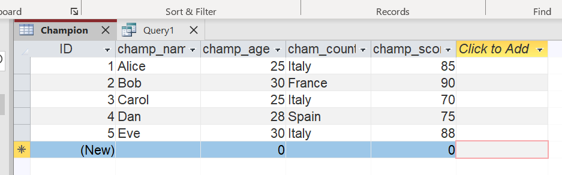
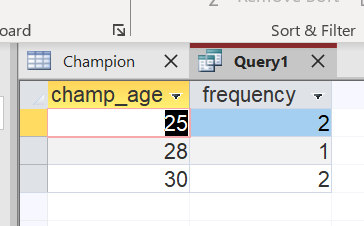
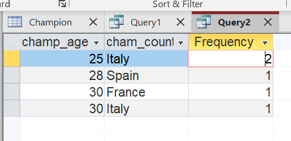

What is a dataset?
A dataset is a structured collection of data organized and stored togheter for analysis or processing. The data within a dataset is tipically related in some way and is ofted derived from a single source or created for a specific project. A dataset may contain various types of data, such as numerical values, text, images, or audio recordings. Its content can usually be accessed individuallu, combined, or managed as a single entity.
Dataset serves many purpose, including training and testing machine learning models, data visualization, research, and statistical analysis. The main difference between a dataset and a database is that a dataset is typically smaller in size, while a database is a larger, organized collection of data composed by multiple datasets. Database also provide mechanisms to easily access, manipulate, and updates the stored data.
What is a distribution?
In statistics, a distribution is a function that describes the possible values a variable can take and how frequently each value occurs. It provides a mathematical representation of the data's behavior, indicating where most observations are concentrated and how the data are spread out.
Distributions can be expressed in various forms, such as probability density functions for continuous data or probability mass functions for discrete data.
Statistical data distributions are generally classified into two main categories:
- Discrete distribution: used when the variable can assume only specific countable values.
- Continuous distribution: used when the variale can take any value within a given range, including fractions and decimals.
Access Dataset
The "Champion" dataset has been created, consisting of the following attributes:
- ID: primary key
- champ_name
- champ_age
- champ_country
- champ_score
Realized by using the following query:
CREATE TABLE "Champion" (
Id INTEGER PRIMARY KEY,
champ_name STRING,
champ_age INTEGER,
champ_country STRING,
champ_score INTEGER
);
Univariate Distribution
The image shows the result of a Sql query in Microsoft Access that displays a univariate distribution of the variable "champ_age", indicating the frequency of each age value in the dataset.
Realized by using the following query:
SELECT champ_age,
COUNT(*) AS frequency
FROM Champion
GROUP BY champ_age
Bivariate Distribution
The image shows the result of a bivariate distribution query in Microsoft Access, displaying the relationship between "champ_age" and "champ_country", along with the frequency of each age-country combination in the dataset.
Realized by using the following query:
SELECT champ_age,
champ_country,
COUNT(*) AS frequency
FROM Champion
GROUP BY champ_age,
champ_country
Text analysis and Caeser Cipher
This section analyzes a text taken from a web page, computes the distribution of letters, applies a Caesar Cipher, and the tries to decode it using frequency analysis.
Functionality explaination
- Analyze Distribution: this function analyzes the text and computes the frequency distribution of letters (A-Z). It shows how often each letter appears, which is a fundamental concept in statistics and cryptanalysis, as it helps identify patterns and irregularities in the data.
- Apply Caesar Cipher: this function encrypts the text using the Caesar Cipher, a simple substitution cipher where each letter in the plaintext is shifted by a fixed number of positions in the alphabet. It demonstrates one of the earliest forms of encryption, showing how basic transformations can conceal the original message.
- Decode (Brute Force): this function attemps to decrypt the encrypted text by trying all possible shifts (from 1 to 25). Since Caeser Cipher has only a limited number of possible keys, this brute-force attach can quickly reveal the orignal plaintext.
- Decode (Frequency Analysis): this function decrypts the message by comparing the letter frequency distribution of the encrypted text to that of a known language (e.g. English). It assumes that the most frequent letter in the ciphtertext corresponds to the most frequent letter in the language (often E in English).
⚠️Problems⚠️
When using a simple frequency analysis to decode a Caesar Cipher, the algorithm aften assumes that the most frequent letter in the encrypted text corresponds to the most frequent letter in the target language (for example, "E" in English). However this assumption can fail for short or unbalanced texts, where the most common letter in the message in not actually "E".
The Chi-Square analysis enhances the accuracy of Caesar Chiper decryption by using statistical letter frequency analysis. Instead of assuming that the most frequent letter in the encrypted text corresponds to "E", it tries all possible shifts and compares the observed letter distribution of each decryption with the expected distribution of the language. The shift that produces the lowest Chi-Square values is chosen, yielding a more reliable decryption even for short or unbalanced texts.
← Back